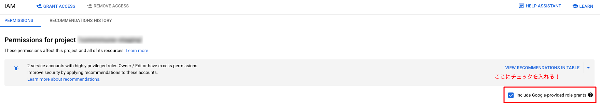

はじめに
Vertex AI Pipelines のサービスアカウント周りが分かりづらかったのと，GCP の他のサービスへの権限付与（IAM ロールの付与）の方法について備忘録として残しておきます．
Vertex AI Pipelines に関連する3つのサービスアカウント
Vertex AI Pipelines に関連するサービスアカウントは以下の3つあります．
- パイプライン実行時に指定できるサービスアカウント
- パイプラインの各コンポーネントが各種リソースにアクセスするために GCP 側が用意したサービスアカウント（サービスエージェント）
- Vertex AI Service Agent
- Vertex AI Custom Code Service Agent
パイプライン実行時に指定できるサービスアカウント
Vertex AI Pipelines の job.submit に指定できるサービスアカウントでパイプライン実行をするために使用されます．これを指定しない場合は，Compute Engine のデフォルトのサービスアカウントを使用してパイプラインが実行されます．
# sample code
SERVICE_ACCOUNT = os.environ["SERVICE_ACCOUNT"]
PROJECT_ID = os.environ["PROJECT_ID"]
job = aiplatform.PipelineJob(
display_name="sample-pipelines",
template_path="sample-pipelines.json",
project=PROJECT_ID,
location="asia-northeast1",
enable_caching=False
)
job.submit(service_account=SERVICE_ACCOUNT)
僕はこのサービスアカウントを開発時に勘違いしていて，ここのサービスアカウントに指定したもので，パイプラインの全てのコンポーネントが動くと勘違いしていました．なので，ML 用にカスタマイズした（必要な IAM ロールを付与）サービスアカウントを指定して実行したものの，権限エラーで動かずという感じで困っていました．
次に説明する2つのサービスアカウントが実際の各コンポーネントを動かすサービスアカウントになります．
GCP 側が用意したサービスアカウント（サービスエージェント）
Vertex AI に関する GCP 側が用意したサービスアカウント（サービスエージェント）は2つあります．
- Vertex AI Custom Code Service Agent
- Vertex AI Service Agent
IAM ロールの画面上では，以下のような登録になっています．
| Principal | Name | Role |
|---|---|---|
service-PROJECT_NUMBER@gcp-sa-aiplatform-cc.iam.gserviceaccount.com |
AI Platform Custom Code Service Agent | Vertex AI Custom Code Service Agent |
service-PROJECT_NUMBER@gcp-sa-aiplatform.iam.gserviceaccount.com |
AI Platform Service Agent | Vertex AI Service Agent |
Vertex AI Custom Code Service Agent
このロールはカスタムトレーニングコードを実行するために使用され，付与されているロールは Vertex AI Custom Code Service Agent (roles/aiplatform.customCodeServiceAgent) ドキュメントから確認できます．
Vertex AI Service Agent
このロールはVertex AI 全般の機能を動作させるために使用され，付与されているロールは Vertex AI Service Agent (roles/aiplatform.serviceAgent) ドキュメントから確認できます．
実際のパイプラインの各コンポーネントの権限は，上記2つのサービスアカウントのどちらかが使われることになるので，このどちらかのサービスアカウントに予め付与されていないサービスを使う場合は権限エラーになってしまいます．そのため，使用したいサービスの権限がリンク先のアクセスコントロールのページで付与されていない場合は，IAM ロールの画面から追加する必要が出てきます．
GCP 側が用意したサービスアカウントに IAM ロールを付与する方法
2つのサービスアカウントのうち使用されるアカウントに対して，適宜必要なロールを付与することで権限がなかったサービスにもアクセスすることができます．
例えば，Firestore へのアクセスは上記2つのアカウントには付与されていないため，デフォルトの状態だと権限不足でアクセスできません．そのため read/write できる Cloud Datastore User (roles/datastore.user) のロールを追加で付与することで Firestore への読み書きができるようになります．

画面上からだと，上図の「Include Google-provided role grants」にチェックを入れることで，GCP 側が用意したサービスアカウントが表示されます．上記2つのサービスアカウントを探して必要な権限を編集して追加することで権限エラーを回避することができます．
おわりに
job.summit 時に指定したサービスアカウントでパイプラインのコンポーネント動かせると思い込んでいて，実際はパイプラインを実行するだけだったので，若干混乱しました．
パイプラインを動かす実際のサービスアカウントは別で2つ存在しており，このドキュメントを見つけることがすぐにできず，時間を消費してしまったのもあり，もしこの辺りで悩んでいる人が居れば参考になるかなと思い，備忘録として残すことにしました．